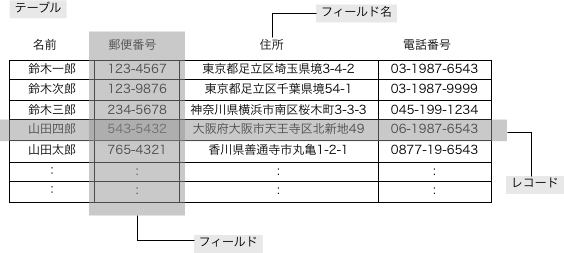

INTER-Mediator Lab. - Room 1
INTER-Mediator Lab. - Room 1
2. データベースについての基本
データベースとは
あらかじめ決められた内容を常に表示するWebページは、HTMLファイルなどを作ってサーバに保存すれば、概ね目的は達成できます。しかしながら、販売品目が変わるコマースサイトなど、状況に応じた内容を表示する必要があるWebサイトでは、Webページを構成するための仕組みとは別に、データのみを「データベース」に保存するのが一般的です。データベースに保存する理由は、確実に保持できる事や、高速に検索できるなどの理由があり、MySQLなどのオープンソース系のデータベースソフトウエアを、Webサーバとは別にサーバ上にインストールして利用されるのが一般的です。
データベースとして利用されるソフトウエアは、リレーショナル型データベースという手法に基づく物が広く利用されています。最近ではそうでないものもありますが、INTER-Mediatorで利用するのはリレーショナル型なので、この手法のみを扱います。
データベースでの記録形式
データベースに記録されているデータは雑多に記録されているわけではありません。Excelなどの表計算ソフトのような「テーブル形式」で記録されているのが基本です。このとき、Excelの1行に相当する物を「レコード」、1列に相当するものを「フィールド」と呼びます（ソフトウエアによっては異なる呼び方の場合もありますが、この名称で以後は説明します）。
この形式でのデータは、概ね、フィールドによって「どんな種類のデータなのか」ということが決められることになります。住所録での「住所」フィールドには、たとえばある人の住所の文字が入力されて、そこに生年月日などは入力しません。そのフィールドがいくつか集まったものが「レコード」です。住所録では、1人の情報が1つのレコードになります。
なお、フィールドに記録できるデータの種類（「型」などと呼びます）をあらかじめ決めておくのが一般的です。この点については、「フィールドは文字列を入力するのか、数値を入力するのかがあらかじめ決められている」といったことでの理解で十分です。
データを特定する
テーブル形式のデータでは、「どのレコード」の「どのフィールド」なのかを指定すると、通常は文字列か数値の1つのデータを得ることができますし、一方保存する事もできます。「どのフィールドか」ということは、フィールド名で特定します。そのため、同一のテーブルではフィールド名が重複することはできません。
一方、「どのレコードか」ということはフィールド名のような名前を付けないため、異なる手法を取ります。「順番で前からいくつ目」ということも、リレーショナル型データベースでは原則としてだめになっています。動作の効率化のため、毎回同じ順序でレコードが登場するということは保証されていません。このような事情もあって、リレーショナル型データベースでは、レコードを特定するためのフィールドを設けます。そのためのフィールドを「主キーフィールド」あるいは「キーフィールド」と呼ばれます。
たとえば、住所録を考えてください。名前からレコードが特定できるかもしれませんが、同姓同名の人もいるかもしれません。そのような状況での1つの方法として、住所録には本来ないかもしれない「番号フィールド」を設けて、データベースソフトウエアの機能を使って、そこに1番以降の連番を自動的に入力し、レコードごとに必ず異なる数値データを入れておく事にします。データが増えてしまうとは言え、その番号フィールドが120だとかいった数値が分かれば、あるレコードを特定できることになります。主キーに関しても設計上はいろいろな手法が可能ですが、INTER-Mediatorではデータとは独立して連番が自動設定されるようなフィールドを利用する事が多くなっています。
検索とソート
リレーショナル型データベースは特定のテーブルに対して、条件を与えてレコードを取り出す事ができます。条件は、フィールドに対して与えます。たとえば、「金額が1000円以上」のような条件を、条件に従って記述します。その結果、条件に合ったレコード群（レコードセット）が得られます。このレコードセットは、0個以上のレコードが含まれます。この検索結果は、検索を指示した元に返すまえに、特定のフィールドのデータに基づいて並べ替えを行います。そのフィールドも検索要求に含め、指示によって昇順や降順といった並べ替えができます。
以上の点から、テーブルは表計算ソフトのワークシートのように理解をすればいいのですが、現実には、テーブルは複数のレコードからなり、レコードは複数のフィールドからなる（正確にはフィールドというよりも「フィールド名で指定されたデータ」と言うべき）といった階層関係があると理解する方が、より実体に即したものと言えるでしょう。
学習時間調査
読み終わったとき、以下のラジオボタンのいずれかを選択して、「読み終わった」ボタンをクリックしてください。
開いてから今まで、このページを、
あまり時間をかけて読んではいなかった
他のことと半々くらいの時間をかけて読んだ
多くの時間をかけて読んだ
ほとんどの時間を読む事に使った
このページの内容について、自分が感じる理解度は、
少しは分かったが半分以下しか分からなかった
半々くらい
すべては理解できないが半分以上は理解した
ほとんど理解できた
←クリックすると、次のページに移動します。